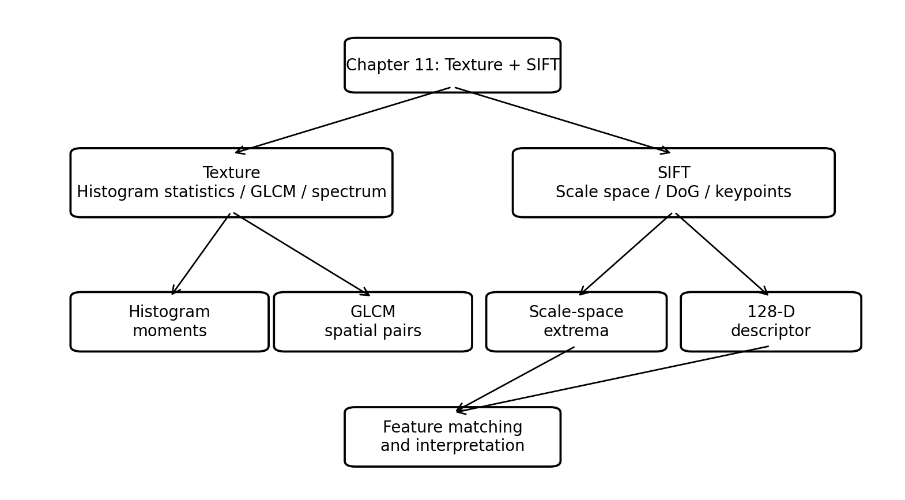
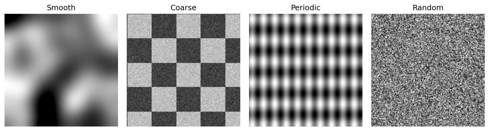
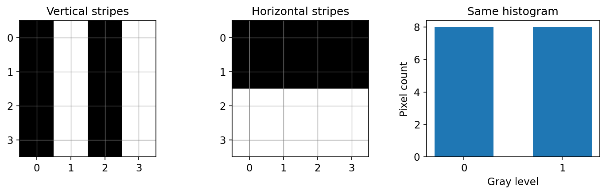
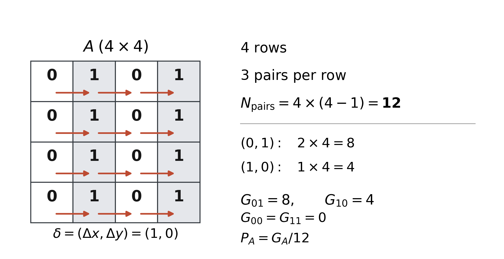
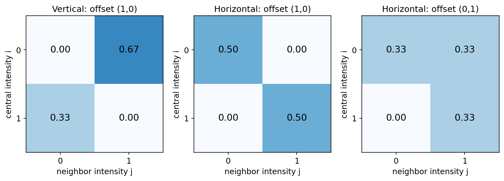
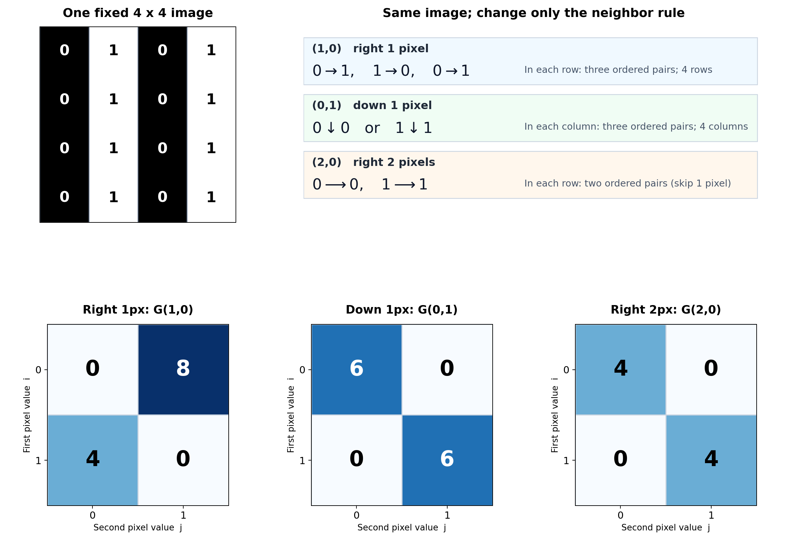
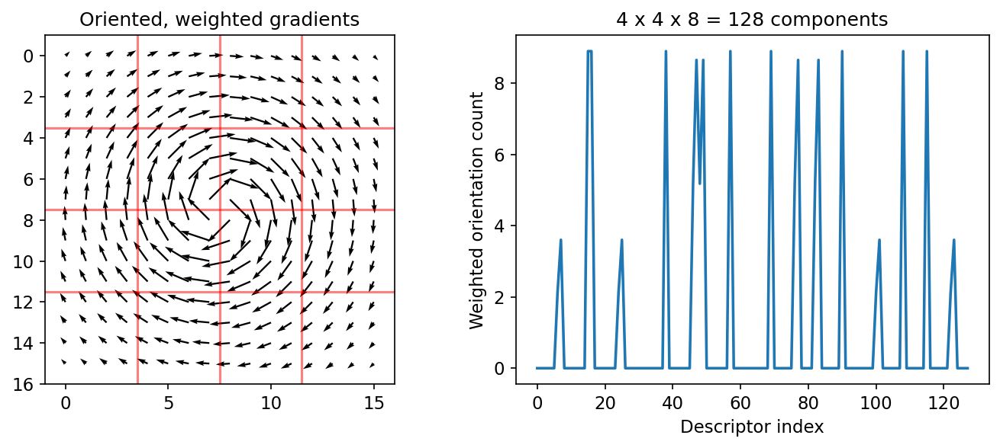

فصل ۱۱: بافت تصویر و توصیفگر SIFT#


Fig. 52 نقشۀ مفهومی فصل: بخش نخست بافت را از آمار تکپیکسلی به روابط فضایی GLCM و سپس طیف فوریه میبرد؛ بخش دوم SIFT را از فضای مقیاس و DoG تا مکانیابی، جهتدهی، توصیفگر ۱۲۸بعدی و تطبیق ویژگی دنبال میکند. این شکل برای همین فصل از نو طراحی شده است.#
اهداف یادگیری#
پس از مطالعۀ این فصل، انتظار میرود دانشجو بتواند تفاوت توصیف آماری و فضایی بافت را توضیح دهد؛ گشتاورهای هیستوگرام، یکنواختی و آنتروپی را محاسبه و محدودیت آنها را بیان کند؛ GLCM را برای یک جابهجایی مشخص بسازد و کنتراست، همگنی، یکنواختی، آنتروپی و همبستگی آن را تفسیر کند؛ اثر جهت و فاصله را بر GLCM توضیح دهد؛ نقش طیف فوریه را در تشخیص تناوب بافت بیان کند؛ و مراحل SIFT از فضای مقیاس و DoG تا توصیفگر ۱۲۸بعدی و آزمون نسبت Lowe را از نظر ریاضی دنبال کند.
مبنای متن و محدودۀ فصل
متن اصلی این صفحه از فایل نهایی LaTeX پیوستشده توسط مدرس حفظ و به MyST Markdown تبدیل شده است. همانگونه که فایل منبع تصریح میکند، این بسته عمداً فقط دو مبحث از فصل یازدهم را پوشش میدهد: Texture از بخش 11.4 و SIFT از بخش 11.7. شکلهای استفادهشده در فایل منبع، شکلهای آموزشی تولیدشده برای همین جزوهاند؛ شکلهای کتاب بازنشر نشدهاند.
فایلهای اجرایی این فصل#
برداشت مفهومی
این جزوه فقط به دو مبحث از فصل یازدهم کتاب گونزالس و وودز میپردازد: بافت تصویر (Texture) از بخش 11.4 (صفحات ۸۴۶ تا ۸۵۷)، و تبدیل ویژگی ناوردا به مقیاس (SIFT-Scale-Invariant Feature Transform) از بخش 11.7 (صفحات ۸۸۱ تا ۸۹۷). هدف، فهم روابط و معنا و محدودیت هر رابطه است؛ نه مرور سایر توصیفگرهای این فصل.
مسیر تدریس#
ابتدا نشان میدهیم چرا دو تصویر با هیستوگرام یکسان میتوانند بافت متفاوت داشته باشند. سپس آمار هیستوگرام، ماتریس هموقوعی (GLCM- Gray-Level Co-occurrence Matrix) و تحلیل فوریه بافت را با مثال عددی بررسی میکنیم. در بخش دوم، از کانولوشن گاوسی و فضای مقیاس به DoG میرسیم؛ مکانیابی نقطه، آزمون لبه، تعیین جهت و توصیفگر ۱۲۸بعدی را گامبهگام پیش میبریم. هر فرمول همراه با توضیح نقش نمادها و تفسیر نتیجه ارائه شده است.
بافت تصویر (Texture)؛ هستهی آموزشی بخش 11.4#
در تصویر یک دیوار آجری، ممکن است نتوانیم تکتک آجرها را بهسادگی جدا کنیم؛ اما نظم، اندازهی دانهها، جهت خطوط و تکرارشدن روشنایی اطلاعات ارزشمندی دربارهی سطح فراهم میکند. به این ویژگیِ فضایی، «بافت» میگوییم. کتاب در این بخش دو خانوادهی اصلی را بررسی میکند: روشهای آماری و روشهای طیفی. روشهای آماری، فراوانیِ شدتها و روابط همسایگی را میسنجند؛ روشهای طیفی، نظم و تکرار را در تبدیل فوریه آشکار میکنند.


Fig. 53 چهار الگوی ساختگی برای تفکیک بافت نرم، درشت، متناوب و تصادفی. این شکل بازسازیِ مستقلِ مفهومی از بحث شکل 11.29 کتاب است.#
گام اول: آمار هیستوگرام (روابط ۱۱-۲۷ تا ۱۱-۳۱ کتاب؛ ص ۸۴۶ تا ۸۴۹)#
فرض کنید \(z_i\) شدتِ خاکستریِ سطح \(i\)، و \(n_i\) تعداد پیکسلهای آن سطح در ناحیهای با \(N\) پیکسل باشد. احتمال تجربی شدت: $\(p(z_i)=\frac{n_i}{N},\qquad \sum_{i=0}^{L-1}p(z_i)=1.\)\( اگر سطح خاکستری \)L=256\( باشد، \)z_i=i\( و \)i=0,\dots,255\(. مقدار متوسط روشنایی از احتمالهای تجربی به دست میآید: \)\(m=\sum_{i=0}^{L-1}z_i p(z_i).\)\( گشتاور مرکزی مرتبهی \)n\( عبارت است از: \)\(\mu_n(z)=\sum_{i=0}^{L-1}(z_i-m)^n p(z_i).\)\( این رابطه فقط فرمولی برای حفظکردن نیست: برای هر سطح خاکستری، فاصلهی آن از میانگین را به توان \)n$ میرسانیم و به نسبتِ وقوعش وزن میدهیم.
واریانس، انحراف معیار و همواری نسبی#
برای \(n=2\): $\(\sigma^2=\mu_2(z)=\sum_i(z_i-m)^2p(z_i),\qquad \sigma=\sqrt{\sigma^2}.\)$ اگر همهی پیکسلها یک شدت داشته باشند، همهی فاصلهها صفرند و واریانس صفر میشود. بزرگبودن واریانس یعنی شدتها پراکندگیِ زیادی دارند؛ نه الزاماً اینکه تصویر از نظر مکانی دانهدرشت است. این تفاوت در مثالِ همهیستوگرام خواهیم دید.
کتاب شاخصِ همواریِ نسبی را با یک تبدیل یکنواخت از واریانس میسازد:
در این رابطه، \(\mu_3\) گشتاور مرکزی مرتبهی سوم و \(\sigma\) انحراف معیار شدت روشنایی است.
چون توان سوم علامت فاصله از میانگین را حفظ میکند، چولگی میتواند جهت نامتقارن بودن توزیع را نشان دهد.
اگر \(\gamma_1>0\) باشد، دنبالهی توزیع به سمت شدتهای روشنتر امتداد دارد. اگر \(\gamma_1<0\) باشد، دنبالهی توزیع به سمت شدتهای تیرهتر امتداد دارد. مقدار صفر به معنی نبود چولگی است، اما لزوماً به معنی تقارن کامل نیست.
۲. کشیدگی اضافی (Excess Kurtosis):
در این رابطه، \(\mu_4\) گشتاور مرکزی مرتبهی چهارم است.
توان چهارم به مقادیر دور از میانگین وزن بسیار بیشتری میدهد. برای مثال، دو برابر شدن فاصله از میانگین، سهم آن مقدار را در گشتاور چهارم شانزده برابر میکند.
عدد \(3\) کم میشود، زیرا برای توزیع نرمال، گشتاور چهارم استانداردشده برابر \(3\) است.
بنابراین، مقدار مثبت کشیدگی اضافی نشاندهندهی گشتاور چهارم استانداردشدهی بزرگتر از توزیع نرمال است. مقدار منفی، مقدار کوچکتر از توزیع نرمال را نشان میدهد.
تقسیم بر \(\sigma^3\) و \(\sigma^4\) سبب میشود این شاخصها بدون واحد باشند و با تغییر مقیاس روشنایی تغییر نکنند.
این روابط فقط برای \(\sigma>0\) تعریف میشوند.
برداشت مفهومی
چولگی و کشیدگی اطلاعاتی دربارهی شکل هیستوگرام میدهند، نه دربارهی مکان پیکسلها.
دو تصویر با هیستوگرام یکسان، حتی اگر بافتهای کاملاً متفاوتی داشته باشند، چولگی و کشیدگی یکسانی خواهند داشت.
برای بررسی ساختار فضایی بافت باید از توصیفگرهایی مانند GLCM استفاده کرد.
یکنواختی هیستوگرام و آنتروپی طبق کتاب: $\(\begin{aligned} U&=\sum_{i=0}^{L-1}p(z_i)^2,\\H&=-\sum_{i=0}^{L-1}p(z_i)\log_2 p(z_i),\qquad 0\log_2 0:=0. \end{aligned}\)\( اگر فقط یک شدت وجود داشته باشد \)U=1,H=0\(؛ اگر \)L\( شدت به یک اندازه رخ دهند \)U=1/L\( و \)H=\log_2L$. چرایی: وقتی جرم احتمال روی یک سطح متمرکز است، مجموع مربعها بزرگ میشود؛ وقتی احتمال بر سطوح مختلف پخش است، عدمقطعیتِ دانستن شدت یک پیکسل بیشتر است.
رابطه و تفسیر
محاسبهی عددی کامل. ناحیهای ۱۶ پیکسل دارد: ۸ پیکسل با مقدار \(z=0\) و ۸ پیکسل با مقدار \(z=1\). پس: $\(p(0)=p(1)=\tfrac12,\quad m=0.5,\quad \sigma^2=\tfrac12(0-0.5)^2+\tfrac12(1-0.5)^2=0.25, \)$
$\( U=(0.5)^2+(0.5)^2=0.5,\qquad H=-2(0.5\log_2 0.5)=1\ \text{bit}.\)$ اگر این ۱۶ پیکسل به طور افقی، عمودی یا شطرنجی چیده شوند، همهی این عددها ثابت میمانند؛ زیرا در هیچیک، مکان پیکسلها وارد نشده است.
چرا هیستوگرام برای توصیف کامل بافت کافی نیست؟#
دو آرایش زیر را ببینید. در هر دو تصویر، ۸ صفر و ۸ یک داریم. یکی نوارهای عمودی و دیگری نوارهای افقی دارد: $\(A=\begin{bmatrix} 0&1&0&1\\0&1&0&1\\0&1&0&1\\0&1&0&1 \end{bmatrix},\qquad B=\begin{bmatrix} 0&0&0&0\\0&0&0&0\\1&1&1&1\\1&1&1&1 \end{bmatrix}. \)$


Fig. 54 دو تصویر با هیستوگرام یکسان ولی ساختار فضایی متفاوت. نمودار سوم توزیع شدت یکسان آنها را نشان میدهد.#
آیا از \(m\)، \(\sigma\)، \(U\) یا \(H\) میتوان فهمید نوارها در کدام جهتاند؟ خیر. در اینجا به شمارش زوجِ پیکسلهایی با فاصله و جهت مشخص نیاز داریم.
ماتریس هموقوعی سطح خاکستری Gray-Level Co-occurrence Matrix (GLCM)#
فرض کنید تعداد سطوح خاکستریِ استفادهشده \(K\) است و بردار جابهجاییِ همسایه را \(\boldsymbol\delta=(\Delta x,\Delta y)\) میگیریم. ماتریس شمارشِ زوجها به صورت زیر تعریف میشود: $\(G_{ij}(\boldsymbol\delta) =\#\left\{(x,y):f(x,y)=i,\ f(x+\Delta x,y+\Delta y)=j\right\}.\)\( این شمارش فقط روی زوجهایی است که هر دو سرشان داخل ناحیه قرار دارند. سپس با تعداد کل زوجهای معتبر نرمال میکنیم: \)\(P_{ij}=\frac{G_{ij}}{\displaystyle\sum_{a=0}^{K-1}\sum_{b=0}^{K-1}G_{ab}},\qquad \sum_{i,j}P_{ij}=1.\)\( **یعنی** درایه \)P_{ij}\( احتمال تجربیِ آن است که یک پیکسل شدت \)i\( داشته باشد و همسایهی تعریفشدهی آن شدت \)j$.
محاسبهی دستی برای نوارهای عمودی و افقی#
جهت همسایگی را یک پیکسل به راست بگیرید: \(\boldsymbol\delta=(1,0)\). در هر ردیف چهارپیکسلی، سه زوج افقی وجود دارد؛ بنابراین در تصویر \(4\times4\) تعداد کل زوجها \(4\times3=12\) است.


Fig. 55 شمارش زوجهای افقی برای جابهجایی \(\boldsymbol\delta=(1,0)\) در یک تصویر \(4\times 4\). هر پیکان یک زوج مرتب را نشان میدهد. در مجموع ۱۲ زوج وجود دارد.#
در تصویر \(A\)، هر سطر \(0,1,0,1\) است. از هر سطر زوجهای \((0,1),(1,0),(0,1)\) به دست میآیند؛ در چهار سطر: $\(G_A=\begin{bmatrix}0&8\\4&0\end{bmatrix},\qquad P_A=\begin{bmatrix}0&2/3\\1/3&0\end{bmatrix}.\)\( در تصویر \)B$، دو ردیف صفر و دو ردیف یک داریم؛ همسایههای راست همیشه همان مقدار را دارند:


Fig. 56 ماتریس هموقوعی نرمالشدهی دو تصویر با جهت همسایگیِ یک پیکسل به راست، و مقایسه با جهت عمودی در تصویر دوم. محورها مقدار پیکسل و همسایهی آناند.#
در \(A\) مقادیر روی خانهی خارجِ قطر اصلی قرار دارند، یعنی دو همسایه اغلب متفاوتاند. در \(B\) جرم احتمال روی قطر اصلی قرار دارد، یعنی دو همسایه یکساناند. این دقیقاً اطلاعاتی است که هیستوگرام قادر به نشاندادنش نیست.
نکتۀ تدریسی
قرارداد جهت در کتاب: ماتریس هموقوعی ممکن است جهتدار یا متقارن تعریف شود. در این جزوه، \(G_{ij}\) زوج مرتب \((i\to j)\) را در جابهجایی \(\boldsymbol\delta\) میشمارد. اگر برای ناوردایی نسبت به معکوسکردن جهت از \(G+G^T\) استفاده شود، مقادیر توصیفگرها ممکن است تغییر کنند. هنگام مقایسهی خروجی نرمافزار باید فاصله، جهت، شمار سطوح، متقارنسازی و نرمالسازی یکسان باشند.
توصیفگرهای عددیِ GLCM؛ جدول 11.3 کتاب#
با \(P_{ij}\) نرمالشده، پنج ویژگیِ مهم کتاب عبارتاند از:
الف) بیشترین احتمال: $\(M_{\max}=\max_{i,j}P_{ij}.\)\( اگر یک نوع زوج غالب باشد، این عدد بزرگ میشود. با توزیع احتمال یکنواخت روی \)K^2\( خانه، \)M_{\max}=1/K^2$.
ب) کنتراست فضایی: $\(C_{G}=\sum_{i=0}^{K-1}\sum_{j=0}^{K-1}(i-j)^2P_{ij}.\)\( برای زوجِ کاملاً مساوی \)i=j\(، وزن آن صفر است. برای زوج با اختلاف سطح ۲، وزن \)4\( و برای اختلاف ۴، وزن \)16$ میشود. پس زوجهای بسیار متفاوت سهم بیشتری در کنتراست دارند.
ج) یکنواختی هموقوعی (ASM): $\(U_G=\sum_{i,j}P_{ij}^2.\)\( اگر فقط یک زوج دیده شود، \)U_G=1\(؛ توزیعشدن جرم احتمال بین زوجهای متعدد، این شاخص را کاهش میدهد. در جدول کتاب همین مجموعِ مربعها «Uniformity (also called Energy)» نامگذاری شده است؛ _برخی کتابخانهها_ نام انرژی را برای \)\sqrt{U_G}$ استفاده میکنند. بنابراین پیش از مقایسهی مقادیر عددی باید تعریف را کنترل کنیم.
د) همگنی (طبق جدول 11.3 همین کتاب): $\(H_G^{\rm book}=\sum_{i,j}\frac{P_{ij}}{1+|i-j|}.\)\( وزنِ درایههای قطری \)1$ است؛ هرچه زوج از قطر اصلی دورتر باشد، سهم آن کمتر است. این فرمِ با قدرمطلق، همان قرارداد جدول 11.3 کتاب است.
هـ) آنتروپی هموقوعی: $\(E_G=-\sum_{i,j}P_{ij}\log_2 P_{ij},\quad 0\log_2 0:=0.\)$ این آنتروپی از آنتروپی هیستوگرام متفاوت است، چون رخدادهای آن زوج پیکسلاند، نه یک پیکسل تنها.
همبستگیِ GLCM؛ معنای ریاضیِ دقیق#
برای درک اینکه شدتِ دو همسایه چگونه با هم تغییر میکند، ابتدا توزیعهای حاشیهای را میگیریم: $\(p_i^{(r)}=\sum_jP_{ij},\qquad p_j^{(c)}=\sum_iP_{ij}.\)\( میانگینها و واریانسهای حاشیهای عبارتاند از: \)\(\begin{aligned} \mu_r&=\sum_i i\,p_i^{(r)},& \sigma_r^2&=\sum_i(i-\mu_r)^2p_i^{(r)},\\ \mu_c&=\sum_j j\,p_j^{(c)},& \sigma_c^2&=\sum_j(j-\mu_c)^2p_j^{(c)}. \end{aligned}\)\( حال ضریب همبستگیِ دو شدتِ همسایه را در قالب توزیع مشترکِ \)P\( مینویسیم: \)\(\rho_G=\frac{\displaystyle\sum_{i,j}(i-\mu_r)(j-\mu_c)P_{ij}} {\sigma_r\sigma_c},\qquad \sigma_r\sigma_c\neq0.\)$ این همان ضریب همبستگی پیرسون بین متغیر تصادفی «شدت پیکسل اول» و «شدت پیکسل دوم» است، منتها توزیع مشترکِ آنها از موقعیت فضایی به دست آمده است. اگر یکی از واریانسها صفر باشد، این فرمول تعریفنشده است؛ برخی پیادهسازیها بهعنوان یک قرارداد نرمافزاری مقداری جایگزین میدهند.
رابطه و تفسیر
محاسبهی همهجانبهی دو مثال \(A\) و \(B\): $\(\begin{array}{c|cc} \text{Descriptor}&P_A&P_B\\\hline \text{Contrast}&1&0\\ \text{Uniformity}&5/9&1/2\\ \text{Homogeneity (book)}&1/2&1\\ \text{Entropy (bits)}&\approx0.9183&1\\ \text{Correlation}&-1&+1 \end{array}\)\( مقدار آنتروپیِ \)A\(، برای روشنشدن محاسبهی جدول: \)\(E_G(P_A)=-\frac23\log_2\frac23-\frac13\log_2\frac13 \approx0.9183\ \text{bits},\qquad E_G(P_B)=1\ \text{bit}.\)\( برای مثال \)A\(: هر زوجِ افقی یکی صفر و دیگری یک است و لذا همبستگی منفی کامل داریم. برای \)B\(، دو شدتِ هر زوج برابرند و همبستگی مثبت کامل است. چون احتمالِ زوجهای خارجِ قطر در \)A$ برابر ۱ است، کنتراست آن دقیقاً ۱ میشود.
نکتۀ تدریسی
تفاوت قرارداد کتاب و نرمافزار: در مستندات تابع graycoprops از کتابخانهی scikit-image، همگنی به صورت $\(H_G^{\rm skimage}=\sum_{i,j}\frac{P_{ij}}{1+(i-j)^2}\)\( تعریف شده است؛ در حالی که جدول 11.3 گونزالس و وودز \)1+|i-j|\( دارد. برای اختلاف ۱ این دو برابرند، اما برای زوج \)i=0,j=2\(، مقدار سهمِ واحد بهترتیب \)1/3\( (کتاب، با مخرجِ \)1+2\() و \)1/5$ (نرمافزار) است. پس مثال دودوییِ بالا این تفاوت را نشان نمیدهد؛ برای دیدنش باید دستکم سه سطح خاکستری داشته باشیم. همچنین Energy در scikit-image ریشهی دوم ASM است. منابع: جدول 11.3 کتاب، ص ۸۵۱؛ مستندات scikit-image، https://scikit-image.org/docs/stable/api/skimage.feature.html.
اثر فاصله و جهتِ همسایگی بر ماتریس GLCM#
این بخش ادامهی مبحث ماتریس هموقوعی سطوح خاکستری (GLCM) است. در GLCM خودِ تصویر را جابهجا نمیکنیم؛ فقط تعیین میکنیم از هر پیکسل، کدام پیکسلِ دیگر را همسایهی آن بدانیم. سپس زوجهای شدتِ \((i,j)\) را میشماریم. پس با عوضشدن فاصله یا جهتِ همسایه، زوجهای شمارششده و در نتیجه درایههای GLCM ممکن است تغییر کنند.
یک مثال ثابت برای سه نوع همسایگی#
همان تصویر \(A\) با نوارهای عمودی را در نظر بگیرید:
توجه: وقتی فاصله از یک به دو پیکسل تغییر میکند، تعداد کل زوجهای معتبر هم ممکن است تغییر کند؛ بنابراین هر ماتریس باید بر تعداد زوجهای همان جهت و همان فاصله تقسیم شود.


Fig. 57 یک تصویر ثابت با نوارهای عمودی و سه تعریفِ متفاوتِ همسایه. پیکانها نشاندهندهی زوجهای مرتباند و ماتریسهای پایین تعداد آن زوجها را نمایش میدهند. در جهت افقی با فاصلهی یک، بیشترِ درایهها خارج از قطرند؛ در جهت عمودی یا فاصلهی افقیِ دو، همهی شمارشها روی قطر قرار میگیرند.#
این تفاوت را چگونه با یک عدد نشان دهیم؟#
کنتراستِ GLCM طبق رابطهی پیشین برابر است با: $\(C_G(\boldsymbol\delta)=\sum_{i,j}(i-j)^2P^{\boldsymbol\delta}_{ij}.\)\( چون تصویرِ ما فقط شدتهای صفر و یک دارد، \)(i-j)^2\( برای زوجهای برابر صفر و برای زوجهای متفاوت یک است. پس کنتراست دقیقاً **سهم زوجهای متفاوت** خواهد بود: \)\(\boxed{C_G(1,0)=1,\qquad C_G(0,1)=0,\qquad C_G(2,0)=0.}\)$ تفسیر بسیار ساده است: بافتِ نوارهای عمودی در امتداد بالا و پایین ثابت است، اما هنگام حرکتِ یک پیکسل به راست مدام بین صفر و یک تغییر میکند. همین تفاوت به ما اطلاعاتی دربارهی جهتداریِ بافت میدهد.
معنای فاصله و زاویه در رابطهی عمومی#
اگر لازم باشد به جای نوشتنِ مستقیمِ مؤلفههای جابهجایی، از اندازه و زاویهی بردار استفاده کنیم، داریم:
در این رابطه، \(\mathbf t(R)\) بردار ویژگیهای بافتِ ناحیهی \(R\) از تصویر است. هر مؤلفهی این بردار، یک ویژگی عددی از بافت را بیان میکند.
مؤلفههای بردار به دو گروه تقسیم میشوند:
الف) ویژگیهای حاصل از هیستوگرام شدت روشنایی:
\(m\): میانگین شدت روشنایی پیکسلهای ناحیه.
\(\sigma\): انحراف معیار شدت روشنایی؛ نشاندهندهی میزان پراکندگی روشناییها نسبت به میانگین.
\(H\): آنتروپی هیستوگرام؛ معیاری از میزان تنوع و عدم قطعیت شدت روشنایی پیکسلها.
\(U\): یکنواختی هیستوگرام؛ مجموع مربع احتمالهای شدت روشنایی. هرچه احتمالها روی تعداد کمتری از سطوح متمرکز باشند، این مقدار بزرگتر است.
ب) ویژگیهای حاصل از ماتریس هموقوعی سطوح خاکستری (GLCM):
\(C_G\): کنتراست هموقوعی؛ نشاندهندهی میزان اختلاف شدت روشنایی بین زوج پیکسلهای انتخابشده.
\(H_G\): همگنی هموقوعی؛ نشاندهندهی میزان تمایل زوج پیکسلها به داشتن شدتهای نزدیک به یکدیگر.
\(\rho_G\): ضریب همبستگی هموقوعی؛ نشاندهندهی ارتباط خطی بین شدت پیکسل اول و شدت همسایهی آن.
در محاسبهی ویژگیهای گروه دوم، فاصله و جهت همسایگی باید از قبل مشخص باشد. بنابراین با تغییر جهت یا فاصله، ممکن است ویژگیهای GLCM تغییر کنند، در حالی که ویژگیهای هیستوگرام ثابت بمانند.
علامت \(T\) در انتهای رابطه به معنای ترانهاده (Transpose) است؛ یعنی ویژگیهای نوشتهشده در داخل کروشه، اجزای یک بردار ستونی هستند.
علامت \(\ldots\) نیز نشان میدهد که میتوان ویژگیهای دیگری مانند یکنواختی هموقوعی \(U_G\) و آنتروپی هموقوعی \(E_G\) را به این بردار اضافه کرد.
ولی در SIFT ابتدا مکان و مقیاسِ پایدارِ نقاط تعیین میشود؛ سپس پیرامون هر نقطه، توزیع جهتِ گرادیانها توصیف میشود. بنابراین خروجی بافت منطقهای معمولاً یک بردار برای هر پنجره و خروجی SIFT معمولاً چندین بردار برای چندین نقطهی همان تصویر است.
تبدیل ویژگی ناوردا به مقیاس (SIFT)؛ بخش 11.7، ص ۸۸۱ تا ۸۹۷#
برداشت مفهومی
تصویر ذهنی برای شروع: از یک ساختمان با دو دوربین و دو فاصله عکس گرفتهایم؛ بخشی از نما بزرگتر، چرخیده و شاید روشنتر دیده میشود. آیا میتوان نقاطی را در دو تصویر یافت که واقعاً به یک نقطه از ساختمان مربوطاند؟ SIFT برای چنین مسئلهای ابتدا نقاط شاخص را در مکان و مقیاس مناسب مییابد، سپس جهت غالب و یک توصیفگر محلی را به دست میآورد.
نقش هر مرحله: آشکارساز در مقابل توصیفگر#
خروجی هر نقطهی کلیدی را به صورت زیر مینویسیم: $\(\mathcal K_k=\bigl(x_k,y_k,\sigma_k,\theta_k,\mathbf d_k\bigr), \qquad \mathbf d_k\in\mathbb R^{128}.\)\( \)(x,y)\( مکان، \)\sigma\( مقیاس، \)\theta\( جهت غالب و \)\mathbf d$ توصیفگرِ ظاهرِ محلی است. چهار کارِ پیدرپی انجام میشود: (۱) پیدا کردن مقیاس و مکان اولیه با DoG؛ (۲) بهینهسازی مکان و حذف نقاط ضعیف؛ (۳) تعیین جهت غالب؛ (۴) تشکیل توصیفگر گرادیانی.
گام ۱: فضای مقیاس و هموارسازی گاوسی (روابط ۱۱-۶۶ و ۱۱-۶۷)#
لکهای که شعاع آن در تصویر اول ۱۰ پیکسل و در تصویر دوم ۲۰ پیکسل است، در دو مقیاس متفاوت دیده میشود. اگر ویژگی را فقط در یک اندازهی پنجره جستجو کنیم، ممکن است در یکی از دو تصویر آن را از دست بدهیم. پاسخ SIFT ساختن فضای مقیاس است؛ یعنی یک خانواده از نسخههای هموارشدهی همان تصویر.
فرض کنیم دو مقدار ویژهی آن \(\alpha\) و \(\beta\) هستند، و اگر هر دو همعلامت و قدرمطلق \(\alpha\geq|\beta|>0\) باشد نسبتِ بزرگیِ خمیدگی را \(r=\alpha/\beta\geq1\) در نظر بگیریم. ردپای ماتریس و دترمینان آن عبارتاند از: $\(\operatorname{tr}(\mathbf H_{xy})=\alpha+\beta, \qquad\det(\mathbf H_{xy})=\alpha\beta.\)\( برای نسبت \)r\( خواهیم داشت \)\alpha=r\beta\(. در نتیجه: \)\(\frac{[\operatorname{tr}(\mathbf H_{xy})]^2}{\det(\mathbf H_{xy})} =\frac{(\alpha+\beta)^2}{\alpha\beta} =\frac{(r+1)^2}{r}.\)\( تابعِ سمت راست برای \)r\geq1\( با بزرگشدن نسبت خمیدگیها افزایش مییابد. بنابراین با آستانهی \)r_{\max}\(، آزمون قبول نقطه به صورت \)\(\boxed{\det(\mathbf H_{xy})>0,\qquad \frac{[\operatorname{tr}(\mathbf H_{xy})]^2}{\det(\mathbf H_{xy})} <\frac{(r_{\max}+1)^2}{r_{\max}}.}\)\( برای مقدار کلاسیک \)r_{\max}=10\(، طرف راست \)121/10=12.1$ است.
رابطه و تفسیر
دو نمونهی عددی: اگر مقادیر ویژه \(\alpha=10,\beta=1\) باشند، نسبت خمیدگی \(r=10\) و طرف چپ \(12.1\) خواهد بود؛ در آزمون سختگیرانهی «کمتر از»، نقطه روی مرزِ پذیرش است. اگر \(\alpha=15,\beta=1\)، آنگاه طرف چپ \(256/15\approx17.07\) است؛ چون از \(12.1\) بزرگتر است، نقطه رد میشود. اگر \(\det\leq0\) نیز نقطه کنار گذاشته میشود.
نکتۀ تدریسی
دو نوع «هسین» را با یکدیگر اشتباه نکنید:
در مکانیابی زیرپیکسلی SIFT، هسینِ \(3\times3\) برای \(x,y,\sigma\) داریم.
در رد پاسخ لبهایِ SIFT، هسینِ \(2\times2\) از مشتقهای دومِ DoG داریم.
گام ۶: تعیین جهت غالب نقطهی کلیدی (روابط ۱۱-۸۰ و ۱۱-۸۱)#
اکنون مکان و مقیاس تعیین شدهاند. برای اینکه دوران تصویر توصیفگر را عوض نکند، لازم است یک جهت مرجعِ محلی پیدا کنیم. از تصویرِ هموارشدهی \(L(x,y,\sigma_k)\) در مقیاس همان نقطه، مشتقها با اختلاف مرکزی تقریب زده میشوند: $\(g_x=L(x+1,y)-L(x-1,y),\qquad g_y=L(x,y+1)-L(x,y-1).\)\( به دلیل حذفِ ضریب مشترک \)1/2\(، زاویه و جهت عوض نمیشود؛ ولی اگر اندازهی فیزیکی مشتق مقصود باشد، اختلاف مرکزی باید بر \)2\( تقسیم شود. بزرگی و جهت گرادیان: \)\(m(x,y)=\sqrt{g_x^2+g_y^2},\qquad \theta(x,y)=\operatorname{atan2}(g_y,g_x).\)$ بزرگیِ گرادیان نشان میدهد تغییر شدت چقدر تند است؛ زاویهی گرادیان نشان میدهد شدت در چه راستایی سریعتر افزایش مییابد. این زاویه عمود بر امتداد لبهی روشنایی است، نه لزوماً همجهت با خودِ خطِ مرزی.
در همسایگی نقطه، هیستوگرام جهت با ۳۶ خانهی ۱۰درجهای ساخته میشود. مشارکت هر پیکسل متناسب با بزرگی گرادیان و وزنِ گاوسیِ فاصله از نقطه است: $\(h_b=\sum_{(x,y)\in\mathcal N}w_\sigma(x,y)m(x,y) \mathcal I_b\bigl(\theta(x,y)\bigr),\quad b=0,\ldots,35. \)$
\(\mathcal I_b\) نشاندهندهی توزیع وزنِ زاویه روی خانهی \(b\) است؛ در پیادهسازی میتوان بین خانههای نزدیک درونیابی کرد. در تنظیم مرجع کتاب، انحراف معیار وزنِ گاوسی حدود \(1.5\sigma_k\) است. بیشینهی هیستوگرام جهتِ اصلی را تعیین میکند. قلههای موضعیِ دیگر که ارتفاعشان دستکم \(80\%\) بیشینهی اصلی باشد نیز میتوانند برای همان مکان و مقیاس یک جهتِ اضافی بسازند.
چرا این کار ناوردایی دوران میدهد؟ اگر کل تصویر به اندازهی \(\alpha\) بچرخد، جهت غالب و جهت گرادیانِ همسایهها هر دو تقریباً \(\alpha\) تغییر میکنند؛ اختلافِ آنها $\(\theta_{\rm relative}(x,y)=\theta(x,y)-\theta_k\pmod{2\pi}\)\( تقریباً ثابت میماند. در عمل با پیمانهی محورهای تصویری (افزایش \)y$ به پایین) باید قرارداد علامتِ زاویه در همهی مراحل یکسان رعایت شود.
گام ۷: ساخت توصیفگر ۱۲۸بعدی (شکل 11.62 و ص ۸۹۲ تا ۸۹۴)#
تعیین نقطه، مقیاس و جهت کافی نیست: هنوز نمیدانیم این نقطه با کدام نقطهی تصویر دیگر مشابه است. برای هر نقطه یک همسایگی (در نمایش متداول، \(16\times16\) نمونه در مقیاسِ متناسب با نقطه) انتخاب میکنیم. دستگاه مختصات همسایگی را مطابق جهتِ اصلی میچرخانیم و گرادیانها را نسبت به همان جهت میسنجیم.
این ناحیه به \(4\times4=16\) سلول تقسیم میشود. در هر سلول، از جهت گرادیانها یک هیستوگرام ۸خانهای با فاصلهی زاویهای \(45^\circ\) میسازیم. پس تعداد کل مؤلفهها: $\(\underbrace{4\times4}_{16\ \text{spatial cells}} \times\underbrace{8}_{\text{orientation bins}}=128.\)$


Fig. 58 سمت چپ: میدان گرادیانِ وزندار و تقسیمبندی فضایی به ۱۶ سلول. سمت راست: نمایش ترتیبیِ ۱۲۸ مؤلفهی حاصل از ۸ خانهی جهت در هر سلول. این نمودار برای آموزش تولید شده است.#
برای هر نمونهی گرادیان با بزرگی \(m\) و زاویهی نسبی \(\varphi\)، ابتدا وزن فضاییِ گاوسی را لحاظ میکنیم؛ سپس مشارکت آن در چند خانهی نزدیکِ مکانی و جهتی با درونیابی سهخطی تقسیم میشود. یک مدل خلاصه برای مؤلفهی \((i,j,b)\) چنین است: $\(d_{i,j,b}=\sum_{p\in\mathcal N}m(p)\,w(p)\, \omega_i(p)\,\omega_j(p)\,\omega_b\bigl(\varphi(p)\bigr),\)\( که \)\omega_i,\omega_j\( سهم مکانی و \)\omega_b$ سهم زاویهایاند؛ برای همسایههای نزدیک، وزن بیشتر است و مجموعِ وزنهای سازگار به یک میرسد.
رابطه و تفسیر
مثال یک گرادیان و دو خانهی زاویه: اگر مرکز دو خانهی مجاور \(22.5^\circ\) و \(67.5^\circ\) باشد و یک بردار با زاویهی \(45^\circ\) و بزرگی \(m=8\) برسد، این بردار از نظر زاویه به هر دو مرکز به یک اندازه نزدیک است. پیش از وزندادن فضایی، سهم زاویهایِ هر خانه \(4\) است؛ نه اینکه کلِ \(8\) را به یکی از دو خانه نسبت دهیم. همین درونیابی نوسان ناگهانیِ توصیفگر در تغییرات کوچک زاویه را کاهش میدهد.
مقابله با تغییر روشنایی: نرمالسازی دوبارهی بردار#
بعد از کنارهمگذاشتن ۱۶ هیستوگرام، بردار \(\mathbf d\in\mathbb R^{128}\) را نرمال میکنیم: $\(\mathbf d_1=\frac{\mathbf d}{\|\mathbf d\|_2}\qquad(\|\mathbf d\|_2>0).\)\( چرا؟ اگر همهی شدتها به صورت \)I’=aI+b\( با \)a>0\( تغییر کنند، در نبودِ اشباع و پس از فیلتر خطی، گرادیانها به صورت \)\nabla I’=a\nabla I\( تغییر میکنند. افزودن مقدار ثابت \)b\( حذف میشود و ضرب \)a$ با نرمالسازیِ طول بردار خنثی میشود. بنابراین بخش بزرگی از اثر تغییرِ خطی روشنایی حذف میشود.
برای کاهش اثر گرادیانهای بسیار بزرگ ناشی از تغییرات غیرخطی یا اشباع، روش مرجع از بریدن مقدارهای نرمالشده در \(0.2\) و نرمالسازیِ مجدد استفاده میکند: